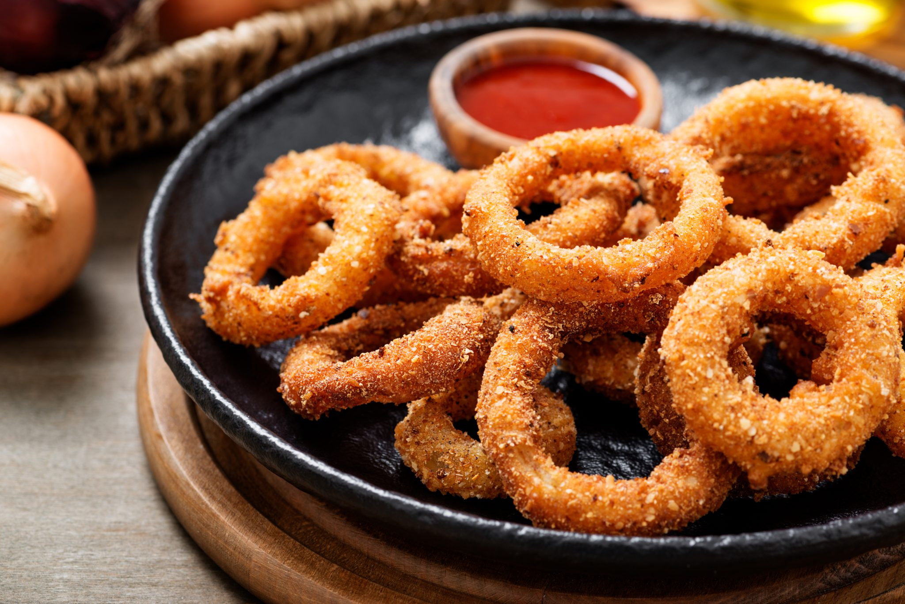

Onion Rings
These onion rings are crispy and delicious! They're perfect for a party or a casual meal.
Ingredients:
- 1 cup all-purpose flour
- 1 teaspoon salt
- 1/2 teaspoon black pepper
- 1 egg, beaten
- 1 cup breadcrumbs
- 1/2 cup milk
- 1/4 cup vegetable oil
- 1 large onion, sliced into rings
Instructions:
- In a shallow bowl, combine the flour, salt, and pepper.
- In a separate shallow bowl, beat the egg.
- In a third shallow bowl, combine the breadcrumbs and milk.
- Dip the onion rings in the flour mixture, then the egg mixture, then the breadcrumb mixture.
- Heat the oil in a large skillet over medium heat.
- Fry the onion rings in batches for 2-3 minutes per side, or until golden brown and crispy.
- Drain on paper towels and serve immediately.